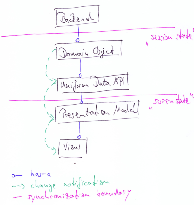
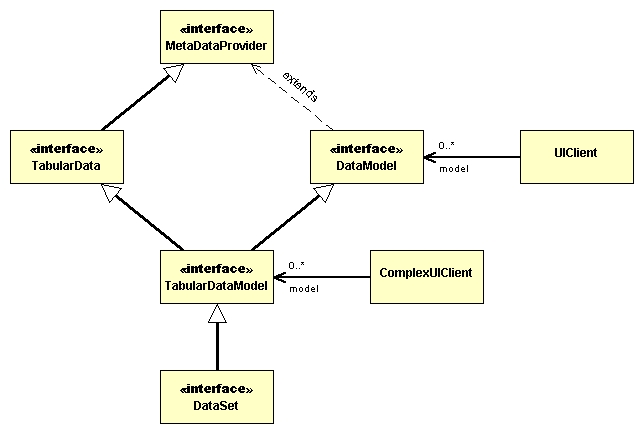
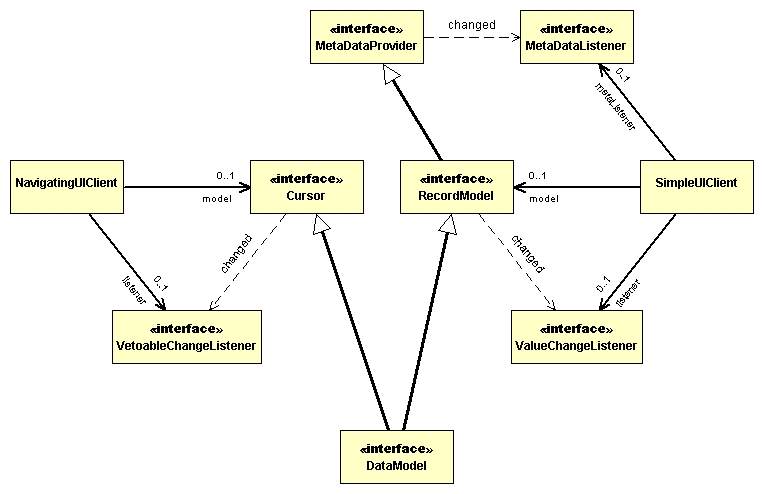
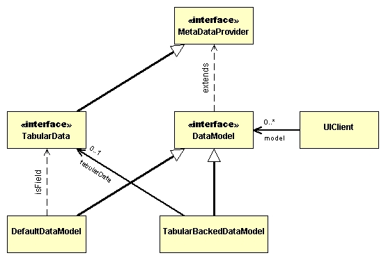

DataModel
Trying to write down some of the ongoing discussion, please feel free
to add
comments anywhere in this draft (I'm always looking through my
ui-spectacles and tend to neglect other aspects :-) And beware: I'm not
an UML freak ... that's just a handy tool to draw named boxes! Don't
take them too literally...
Presentation Model
Here's yet another of my ominous hand-drawn sketches, trying to explain
my perspective of the overall design. It's an adaption of Fowlers
to our needs of having a uniform Data API - all errors are mine, of
course.

The basic layering of data is persistence/domain/presentation - roughly
"record state"/"session state"/"screen state".
The principle problem to solve is to expose some backend data in UI
widgets to be visualized/changed and written back to the persistent
data store. This implies that there are (one or more) copies of the
data (mostly in memory - but not necessarily) which must be
"synchronized". There are two major synchronization boundaries: one
between backend and domain and one between domain and presentation.
It's crucial to keep the layers separated - this implies that the
references between participants is stricly uni-directional: they are
always in the direction from the view to the backend (the blue has-a in
the sketch). The necessary update notifications in the other direction
is handled via decoupled event/listener chains (the green arrows).
A refined separation of concerns in the presentation layer is to
separate out the presentation logic. The basic idea is to have a
intelligent gui-unaware class ("Presentation Model") deciding about the
"what" and a dumb gui-aware class ("View") deciding about the "how".
Among the advantages of the separation are:
- independence of view related details (f.i. layout, choice of
widget, in its extreme even choice of
widget toolkit)
- easier programming of presentation (a consequence of
concentrating on behaviour) with a high potential to automate
- support of multiple views with the same logical behaviour
- separated testing
To sum up what a "Presentation Model" is:
- encapsulates state and behaviour of one or several "screens" of
data
- as such it is the place to choose which data items should be
shown (may span distinct Domain Objects)
- place to define/add presentation-only fields
- place to handle inter-field/inter-object dependencies (f.i.
decide when/if a given field should be accessible for edits depending
on another field)
- place to handle user-interactions
Broad Picture
The current (release 0.7) state differs from the pictures below in
several aspects.
- the DataSet is a separate abstraction capturing the
(relational?) Data properties and interrelations. It's a nicely
bounded container for tightly coupled parts and takes care of all the
ugly inter-part dependencies. Loose coupling into the DataModel space
is done by adapters (see the dataset.adapter package).
- the DataModel is revised to only have the "record-like" role (the
"RecordModel" below), the "Cursor" role is extracted into
SelectionModel..
The following (simplified) class diagram is the state as discussed in
the forum
(there's an older version
from around mid-december). The idea was to keep the current DataModel
more
or less as-is and add additional features (f.i. "being" a data
structure as opposed to residing as a kind of cursor on top of an
arbitrary structure) independently. My expectation is that many
UI-Clients will be happy enough with the pure DataModel while more
advanced set-ups may need to hook at the TabularDataModel level.

The basic collaborators:
- MetaDataProvider: responsible to hold the collection of metaData
and notify about structural changes. [Think: can be responsible to
propagate property changes of the contained metaData as well, this
would relieve listeners from having to un-/subscribe to the individual
metaData]
- DataModel: additionally responsible to hold a collection of
associated (to the fields as described by the metaData) values and
notify about changes to those. Has a notion of "position" (=
recordIndex) in a "range" (< recordCount).
- [currently this is conceptually only, not "real"] TabularData:
additionally responsible to hold a two-dimensional
structure of values with arbitrary access (by fieldName/rowIndex) and
notify about changes of the values and "structural" changes in the row
dimension.
- TabularDataModel: extension of both DataModel and data structure
- DataSet: that's where Richard jumps in - all the complex details
introduced by persistence.
(I deliberately kept a crowded diagram
including examplary methods out off the way).
Roles of DataModel
The feeble "extends" association from DataModel to MetaDataProvider is
a tool artifact. It comes into play because the DataModel has two
functional roles (which I modelled as in-between interfaces to
emphasize their existence - they should be regarded as "virtual", don't
want too many classes around): one is the "record" like collection of
metaData/value pairs, the other is the "cursor" (or moveable?
navigateable?) notion.

In the UI-realm those roles can map to different clients:
- a simple client is mainly interested in the values/metaDatas,
listening to ValueChangeEvents and MetaDataEvents only. It is
blissfully uninterested as to why those values change - it's the
responsibility of the model implementation to map arbitrary events
which result in a change of a "current" value to a ValueChangeEvent.
[Think: same holds for metaData?] Examples are JForm (interested in the
record) and Binding (interested in a field of the record).
- a navigating client is interested in moving the cursor around.
The move is (trivially) constrained by the range. Additionally there
might be non-trivial internal and external constraints: an example for
internal ?? (some backend condition? Richard, that's your turf, I'm
only wildly guessing), an example for external is a modified but not
yet submitted value in the model. Making the recordIndex a vetoable
bound property takes care of the non-trivial constraints: the DataModel
guarantees to respect vetos against changes. An example for a
navigating client is Navigation , an example for a vetoing instance is
FormHandler (both still in the incubator - sorry for the messiness
there).
- there is also the more complex case of a selection model on the
TabularDataModel. More specifically, there may be more than one records
selected at any given time. Simple bindings to the DataModel are not
concerned about this since the DataModel will give an appropriate value
to the Binding. As mentioned earlier, most components will remain
blissfully
unaware that multiple selection has occurred.
Enter TabularData

That's the most open issue: how to bind the TabularData as-a-whole in
an overview-detail scenario ("navigational list")? The possibility
that's inside the current semantics (Binding happens to fields of a
DataModel) is to add the tabularData as a field to a
(Default)DataModel, configure the metaData for this field and let the
form bind it as a List, Table.... To bind the individual records
(allowing paging through them), there's a need for adapting the
TabularData to a DataModel and then bind that to the form as well (see
SimpleAlbumForm) .[TBD: Trying to explain it reminds me that I'll have
to check my incubator code to see if it's a clumsy as Richard suspects
:-) ]
Keeping the TabularData decoupled from the DataModel allows to open
multiple DataModels (mapping each to a different form) backed by the
same table data. Obviously there will be complications if those forms
are allowed to update the tablular data independently (and/or if
there are backend related re-loading/update constraints on the tabular
data).
*Jeanette, I'm not sure
that this paragraph is necessarily true.
If the DataModel were tabular in nature (with a getValueAt/setValueAt
method pair), it does not require that only one DataModel can exist per
DataSet any more than the current DataModel does.
* Richard, maybe we are
meaning different things when talking about "multiple": What I mean is
to open up different independent "cursors" on top a given
TabularData(Model)
TabularDataModel tabularData = createDataFromBackend();
JForm form = new JForm(tabularData, AS_TABLE);
showInFrame(form);
// on user trigger open a non-modal dialog bound to the first
DataModel modelForFirstRow = new TableBackedDataModel(tabularData, firstRow);
JForm formA = new JForm(modelForFirstRow);
showInDialog(formA);
// open another non-modal bound to the lastRow
DataModel modelForLastRow = new TableBackedDataModel(tabularData, lastRow);
JForm formB = new JForm(modelForLastRow);
showInDialog(formB);
That's easily possible with the DataModel abstraction because it is the
cursor only, that's "has-a" relation to the data structure.
That's not so easily possible with a TabularDataModel because that's a
"is-a" relation to the data structure and because of the "is-a"
to the DataModel it's implicitly single selection (in the sense I tried
to sketch in the pseudo-code)
What I see in the reorg incubator is something different - "calculate"
a value from multiple selected rows (returning either their common
value if they are equal or null if any differs). That's a cool feature,
BTW :-)
Richard's latest epiphany
In the simplist case, a single component like
a JLabel is bound to a single field in the DataSet. This is abstracted
as a binding to the DataModel (which DataSet implements). However, this
same
single component might be interested in being bound to several fields
in a
single record. For example, our JLabel might be bound to the computed
value
dataModel.getValue("firstName") + " " +
dataModel.getValue("lastName");.
It is also possible that this single field could be bound to a
computed value
over the set of records in the DataSet. For example, the JLabel could
contain
something like dataModel.getValueAt("firstName", 0) + "
- " + dataModel.getValueAt("firstName",
dataModel.getRecordCount());. This would effectively set the
label to
display the first firstName in the DataSet
and the
last firstName in the DataSet.
Thus, any bound component could potentially be interested in the set
of all
records, rather than simply the current record. Also, this thought
experiment
demonstrates that all bound components essentially need the same
expressive
power to define interactions with the set of all data. The one
difference is
that some components are also interested in setting the selected rows
on
the DataSet.
A short answer
The place to do so is not the Binding but the model: any computation
should be kept out of the Binding, the resulting values for
representation should be modelled as a field in the DataModel (that's
what I mean when talking about "chaining" models).
DataModel originalBean = new JavaBeanDataModel(Person.class);
DataModel combiningModel = new CombiningFieldModel(originalBean);
chainedBean.addField("combinedName", {"firstName", "lastName"});
form.bind(chainedBean);
The trick is to see the "binding" mechanism as a chain of
value-transporting actors: at one end is a data structure which might
be (but not necessarily is) backed by a persitent data source, at the
other end is the component that should present the value in a
human-readable and -editable manner. The "DataSet"/"TabularDataModel"
is the element at the start of the chain, providing a uniform API to
manipulate (mostly meaning to configure the MetaData). The "Binding"
class is the very last element before the component - it's basic
task is to synchronize data between component and a single value of a
DataModel. This synchronizing is independent of any (hidden) internals
of the Model. Between the start and the end of the chain can be any
number of transforming/adapting DataModels - the Binding does not and
must not care.
TabularData: adding/removing rows
nothing done yet ...